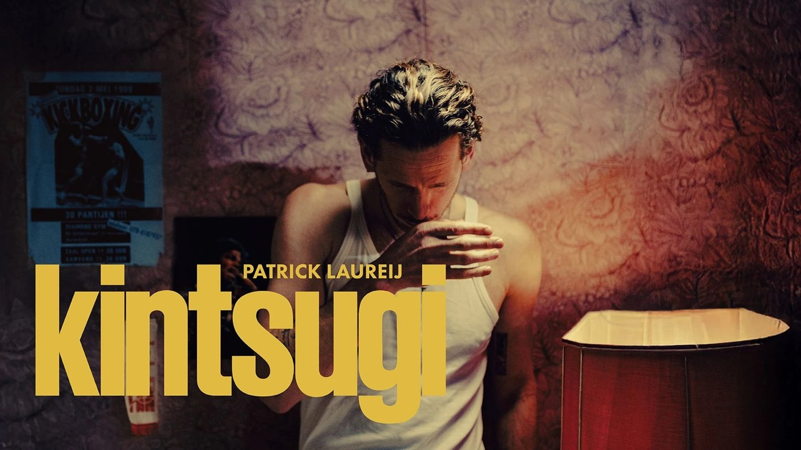

Februari 2027
Een avond lachen met Patrick Laureij

We gaan samen naar Kintsugi, de voorstelling van Patrick Laureij, in De Nieuwe Kolk in Assen.
Kintsugi is de Japanse kunst om gebroken aardewerk te lijmen met goud. De barst wordt zo het mooiste deel van de kom.
Jij hoeft niets te regelen. De kaarten zijn al geregeld, en ik zorg voor de rest van de avond.
- Voorstelling
- Patrick Laureij – Kintsugi
- Theater
- De Nieuwe Kolk, Assen
- Datum
- Dinsdag 9 maart 2027
- Aanvang
- 20:00 uur
- Plaatsen
- 1e balkon, rij 3, stoel 23 en 24
- Rang
- Rang 1
Liefs, Reinout